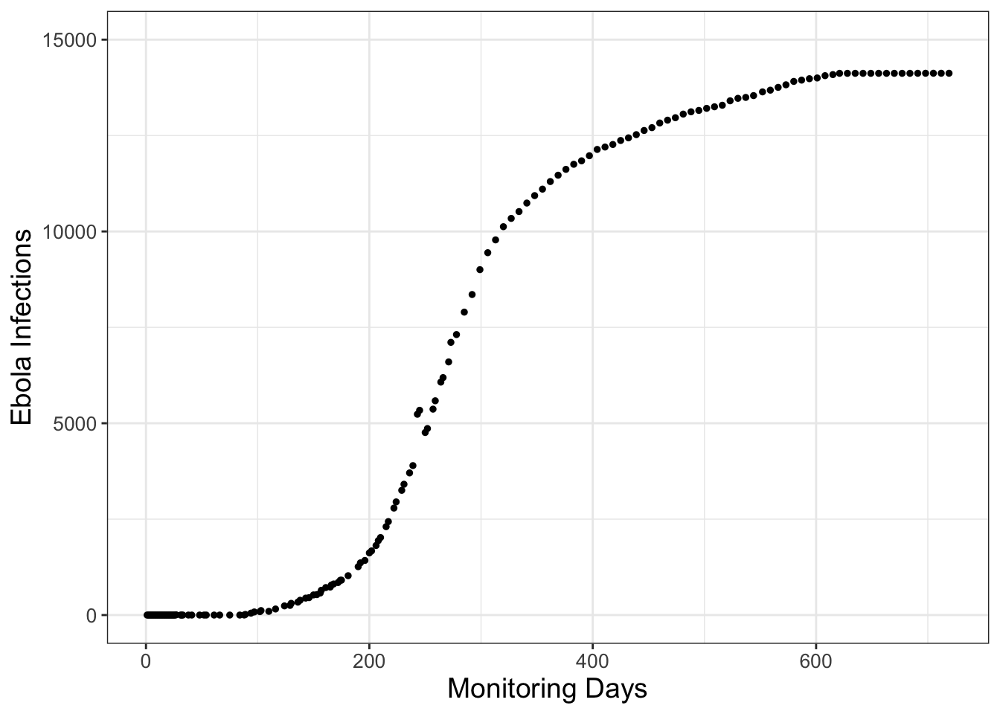
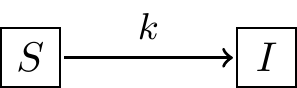
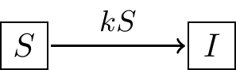
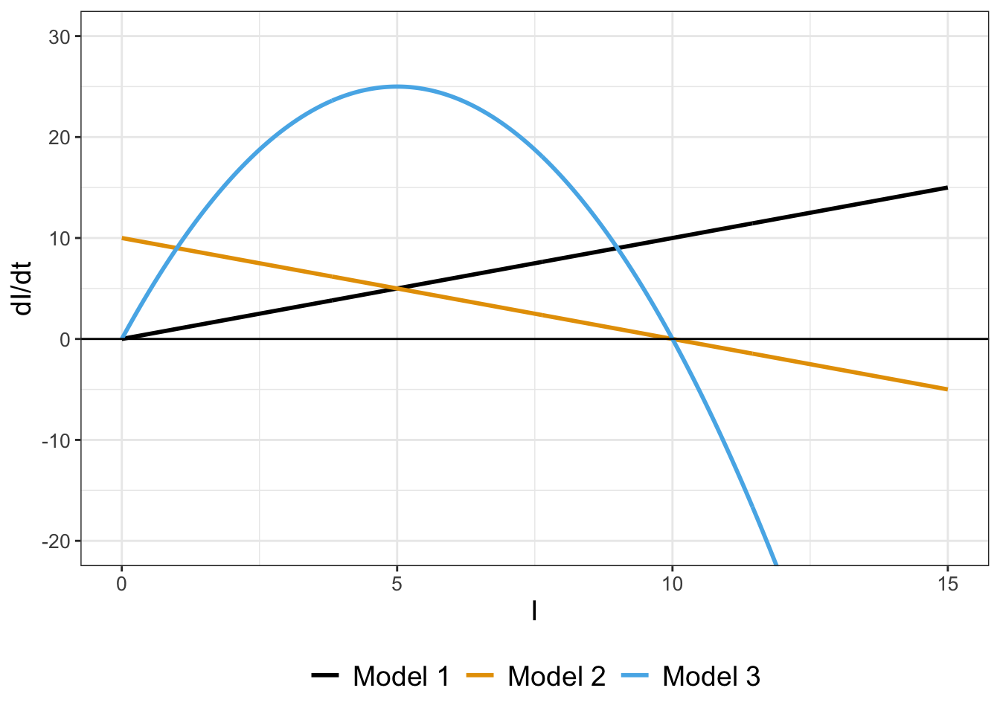
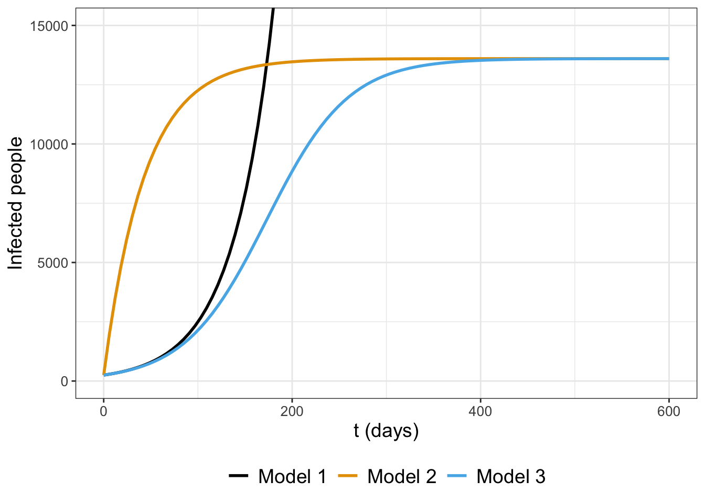
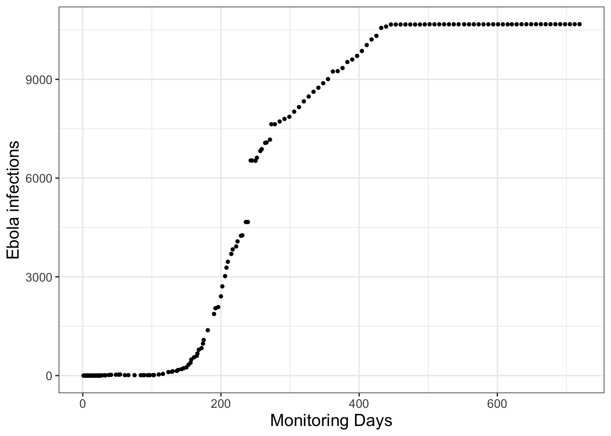
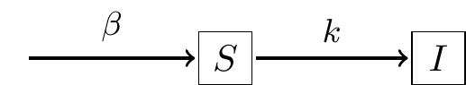
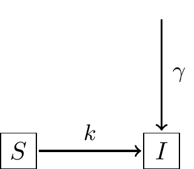

1 Models of Rates with Data
1.1 Rates of change in the world: a model is born
This book focuses on understanding rates of change and their application to modeling real-world phenomena with contexts from the natural sciences. Additionally, this book emphasizes using equations with data, building both competence and confidence to construct and evaluate a mathematical model with data. Perhaps these emphases are different from when you analyzed rates of change in a calculus course; consider the following types of questions:
- If \(y = xe^{-x}\), what is the derivative function \(f'(x)\)?
- What is the equation of the tangent line to \(y=x^{3}-x\) at \(a=1\)?
- Where is the graph of \(\sin(x)\) increasing at an increasing rate?
- If you release a ball from the top of a skyscraper 500 meters above the ground, what is its speed when it impacts the ground?
- What is the largest area that can be enclosed in a chicken coop with 100 feet of fencing, with one side being along a wall?
The first three questions do not appear to be connected in a real-world context in their framing - but the last two questions do have some context from real-world situations. The given context may reveal underlying assumptions or physical principles, which are the starting point to build a mathematical model. For the chicken coop problem, perhaps the next step is to use the assumed geometry (rectangle) with the 100 feet of fencing to develop a function for the area.
Maybe the context includes observational data and several different (perhaps conflicting) assumptions about the context at hand. For example, how does air resistance affect the ball’s velocity? Would a circular chicken coop maximize the area more than a rectangular coop? For both of these cases, which model is the best one to approximate any observational data? The short answer: it depends. To understand why, let’s take a look at another problem in context.
1.2 Modeling in context: the spread of a disease
Consider the data in Figure 1.1, which come from an Ebola outbreak in Sierra Leone in 2014. (Data provided from Matthes (2021).) The vertical axis in Figure 1.1 represents Ebola infections over 2 years from initial monitoring in March 2014.
Constructing a model from disease dynamics is part of the field of mathematical epidemiology. Here we focus on person to person or population spread of Ebola. Other types of models could focus on the immune response within a single person - perhaps with a goal to design effective types of treatments to reduce the severity of infection. How we construct a mathematical model for this outbreak largely depends on the assumptions underlying the biological dynamics of disease transmission (which we will call the infection rate). Three plausible assumptions for the infection rate are the following:
- The infection rate is proportional to the number of people infected.
- The infection rate is proportional to the number of people not infected.
- The infection rate is proportional to the number of infected people coming into contact with those not infected.
Now let’s explore how to translate these assumptions into a mathematical model. Since we are discussing rates of infection, this means we will need a rate of change or derivative. Let’s use the letter \(I\) to represent the number of people that are infected.
1.2.1 Model 1: Infection rate proportional to number infected
The first assumption states that the infection rate is proportional to the number of people infected. Translated into an equation this would be the following:
\[ \frac{dI}{dt} = kI \tag{1.1}\]
Equation 1.1 is an example of a differential equation, which is just a mathematical equation with rates of change. In Equation 1.1 \(k\) is a proportionality constant or parameter, with units of time\(^{-1}\) for consistency.
The solution to a differential equation is a function \(I(t)\). When we “solve” a differential equation we determine the family of functions consistent with our rate equation.1 There are a lot of techniques to solve a differential equation; we will explore some in Chapter 7.
The proportionality constant or parameter \(k\) is important to understand the solution to Equation 1.1. Even though no numerical value for \(k\) is specified, you can always solve an equation without specifying the parameter. In some situations we may not be as concerned with the particular value of the parameter but rather its influence on the long-term behavior of the system (this is a key aspect of bifurcation theory described in Chapter 20. Otherwise we can use the collected data shown above with the given model to determine the value for \(k\). This combination of a mathematical model with data is called data assimilation or model-data fusion (see Chapters 8-14).
How plausible is this first model? The first model assumes the rate of change (Equation 1.1) gets larger as the number of infected people \(I\) increases. This reasoning certainly seems plausible: when there are so many people infected it can be hard to stay healthy! At some point the number of people who are not sick will reach zero, making the rate of infection zero (or no increase). In the case of Ebola or any other infectious disease, stringent public health measures would be enacted if the number of people infected became too large.2 Following public health measures we would expect that the rate of infection would decrease and the number of infections to slow. So perhaps another model this can capture this “slowing down” of the infection rate is more plausible.
1.2.2 Model 2: Infection rate proportional to number NOT infected
The second model considers the interaction between people who are sick (which we have denoted as \(I\)) and people who are not sick, which we will call \(S\), or susceptible. Equation 1.2 is an example of a differential equation that models this interation:
\[ \frac{dI}{dt} = kS \tag{1.2}\]
As with Equation 1.1 the parameter \(k\) represents an infection rate. We would expect that both \(I\) and \(S\) change in time as the infection occurs; for a finite population as more people get sick (\(I\)), that would mean that \(S\) would decrease. In effect, Model 2 should have two rates of change: one for \(I\) and one for \(S\). Figure 1.2 shows a schematic of this process of infection.

There are three reasons why I like to use diagrams like Figure 1.2:
- Diagrams build a bridge between biological processes and mathematical models.
- Diagrams signal which rates (if any) can be conserved (more on this below).
- Diagrams help to identify assumed parameters (i.e. \(k\) in Figure 1.2).
- Diagrams suggest how to construct differential equations for this mathematical model. Figure 1.2 suggests a flow between the suspectible state \(S\) to the infected state \(I\). So then the rate of change equation for \(S\) is \(\displaystyle \frac{dS}{dt} = -kS\) (the parameter listed above the arrow in Figure 1.2). Equation 1.3 combines all this thinking and Equation 1.2 into the following coupled system of differential equations in Equation 1.3:
\[ \begin{split} \frac{dS}{dt} &= -kS \\ \frac{dI}{dt} &= kS \end{split} \tag{1.3}\]
The solution to Equation 1.3 is functions \(S(t)\) and \(I(t)\) that evolve over time. We don’t have the tools to determine the exact solutions for Equation 1.3 yet (we will study systems like these in Chapters 15-20). However something interesting occurs with Equation 1.3 when we add the rates \(\displaystyle \frac{dS}{dt}\) and \(\displaystyle \frac{dI}{dt}\) together (Equation 1.4):
\[ \frac{dS}{dt} + \frac{dI}{dt} = \frac{d}{dt}(S+I) = 0 \tag{1.4}\]
If a rate of change equals zero then the corresponding function is constant. In effect, Equation 1.4 means that the combined variable \(S+I\) is constant, so we could say that \(S+I=N\), where \(N\) is the total population size. The expression \(S+I=N\) is an example of a conservation law for our system.3 Figure 1.2 also suggests a conservation law because there are no additional arrows going into or from the variables \(S\) or \(I\). Since \(S=N-I\), Equation 1.3 can be re-written with a single equation (Equation 1.5):
\[ \frac{dI}{dt} = k(N-I) \tag{1.5}\]
Equation 1.5 also indicates limiting behavior for Model 2. As the number of infected people reaches \(N\) (the total population size), the values of \(\displaystyle \frac{dI}{dt}\) approaches zero, meaning \(I\) doesn’t change. Biologically this would suggest that eventually everyone in the population would get sick with the disease (assuming no one has any natural immunity). Equation 1.5 also has one caveat: if there are no infected people around (\(I=0\)) the disease can still be transmitted, which might not make good biological sense. The next model (Model 3) tries to amend that shortcoming.
1.2.3 Model 3: Infection rate proportional to infected meeting not infected
Now consider a third model that rectifies some of the shortcomings of the second model (the second model rectified the shortcomings of the first model). The third model states that the rate of infection is due to those who are sick infecting those who are not sick. This scenario would also make some sense, as it focuses on the transmission of the disease between susceptibles and infected people. So if nobody is sick (\(I=0\)) then the disease is not spread. Likewise if there are no susceptibles (\(S=0\)), the disease is not spread as well.
In this case the diagram outlining the third model looks something like this:

Notice how in Figure 1.3 there is an additional variable \(S\) associated with \(k\) to show how the rate of infection depends on \(S\). Equation 1.6 contains the differential equations that describe the scenario outlined in Figure 1.3:
\[ \begin{split} \frac{dS}{dt} &= -kSI \\ \frac{dI}{dt} &= kSI \end{split} \tag{1.6}\]
Similar to Model 2 we can combine the two equations to yield a single differential equation (Equation 1.7):
\[ \frac{dI}{dt} = k\cdot I \cdot (N-I) \tag{1.7}\]
Equation 1.7 appears similar to Equation 1.5, doesn’t it? However in Equation 1.7 notice the variable \(I\) outside the expression \((N-I)\). If \(I=0\), then there is no increase in infection (the rate is zero). If \(I=N\) (the total population size) then there is no increase in the infection (the rate is zero as well). Model 3 seems to be more consistent with the biological reasoning for the spread of infection.
Let’s compare all the rates for all three models together in Figure 1.4. Figure 1.4 has a lot to unpack, but we can use some of our understanding of rates of change in calculus to compare the three models. Notice how the sign of \(\displaystyle \frac{dI}{dt}\) is always positive for Model 1, indicating that the solution (\(I\)) is always increasing. For Models 2 and 3, \(\displaystyle \frac{dI}{dt}\) equals zero when \(I=10\), which also is the value for \(N\) After that case, \(\displaystyle \frac{dI}{dt}\) turns negative, meaning that \(I\) is decreasing.

In summary, examining the graphs of the rates can tell a lot about the qualitative behavior of a solution to a differential equation even without the solution.
1.3 Model solutions
Let’s return back to possible solutions (in this case formulas for \(I(t)\)) for our models. Usually a differential equation also has a starting or an initial value (typically at \(t=0\)) that actualizes the solution. When we state a differential equation with a starting value we have an initial value problem. We will represent that initial value as \(I(0)=I_{0}\).
With that assumption, we can (and will solve later!) the following solutions for these models:
\[ \begin{split} \mbox{ Model 1 (Exponential): } & I(t) = I_{0}e^{kt} \\ \mbox{Model 2 (Saturating): } & I(t) = N-(N-I_{0})e^{-kt} \\ \mbox{Model 3 (Logistic): } & I(t) = \frac{N \cdot I_{0} }{I_{0}+(N-I_{0})e^{-kt}} \end{split} \tag{1.8}\]
Notice how I assigned the names to each model (Exponential, Saturating, and Logistic). That may not mean much at the moment, but Figure 1.5) plots the three functions \(I(t)\) together when \(I_{0}=250\), \(k=0.023\), and \(N=13600\).

Notice how in Figure 1.5, Model 1 increases quickly - it actually grows without bound off the chart! Model 2 and Model 3 have saturating behavior, but it looks like Model 3 might be the one that actually captures the trend of the data.
1.4 Which model is best?
All three of these scenarios describe different modeling scenarios. With the saturating and logistic models (Models 2 and 3) we have some limiting behavior, the possibility that the rate of infection slows. Of the two models, which one is the best one? Here could be some possible criteria we could evaluate:
- Do the model outputs match the data?
- For timeseries data are the trends accurately represented?
- Can the model be coded easily into the computer?
- How will model outputs compare with newly collected measurements?
- Regarding model complexity - how many equations do we have?
- Are the number of model parameters too few or too many?
We will address several of these critera later on in this textbook when we discuss model selection (Chapter 14). Model selection is one key part of the modeling hypothesis - where we investigate the implications of a particular model analyzed. If we don’t do this, we don’t have an opportunity to test out what is plausible for our models.
1.5 Start here
In summary, it turns out that even with some initial assumptions we can very quickly build up a mathematical model to explain data. Even with these first steps we have a lot more to uncover:
- How would you determine the parameters \(k\) and \(N\) with the collected data?
- Are there other more complicated models?
- What exact techniques are used to determine the solution \(I(t)\)?
- Are there other numerical techniques to approximate the solution \(I(t)\)?
- What happens to our solutions when the parameters \(k\) and \(N\) change?
- What happens to our solutions when the number of infected people changes randomly for some reason?
This text will study answers to these questions and more. Let’s get started!
1.6 Exercises
Exercise 1.1 Solutions to an outbreak model of the flu are the following:
\[ \begin{split} \mbox{Saturating model: } & I(t) = 3000-2990e^{-.1t} \\ \mbox{Logistic model: } & I(t) = \frac{30000 }{10+2990e^{-.15t}}, \end{split} \]
where \(t\) is in days. Use these two functions to answer the following questions:
- Plot the saturating and logistic models when \(0 \leq t \leq 100\).
- For both models, how would you describe the growth of the outbreak as \(t\) increases? How many people will be infected overall?
- Finally, for both models evaluate \(\lim_{t \rightarrow \infty} I(t)\). How do these results compare to values found on your graph?
Exercise 1.2 The Ebola outbreak for the country of Liberia in 2014 is shown in Figure 1.6. If we were to apply the logistic model (Model 3) based on this graphic what would be your estimate for \(N\)?

Exercise 1.3 The general solutions for the saturating and the logistic models are: \[ \begin{split} \mbox{Saturating model: } & I(t) = N-(N-I_{0})e^{-kt} \\ \mbox{Logistic model: } & I(t) = \frac{N \cdot I_{0} }{I_{0}+(N-I_{0})e^{-kt}}, \end{split} \] where \(I_{0}\) is the initial number of people infected and \(N\) is the overall population size. Using the functions from Exercise 1.1 for both models, what are the values for \(N\) and \(I_{0}\)?
Exercise 1.4 The general solutions for the saturating and the logistic models are:
\[ \begin{split} \mbox{Saturating model: } & I(t) = N-(N-I_{0})e^{-kt} \\ \mbox{Logistic model: } & I(t) = \frac{N \cdot I_{0} }{I_{0}+(N-I_{0})e^{-kt}}, \end{split} \] where \(I_{0}\) is the initial number of people infected and \(N\) is the overall population size. For both models carefully evaluate the limits to show \(\lim_{t \rightarrow \infty} I(t)=N\). How do these limiting values compare to the steady-state values you found for Models 2 and 3 in Figure 1.5), where \(N=13600\)?

Exercise 1.5 Figure 1.7 shows a schematic diagram which is a variation on Figure 1.2. In this case people are entering the the susceptible population \(S\) at a rate \(\beta\), so the population is not conserved. What is the coupled system of differential equations for this model?
Exercise 1.6 A model that describes the growth of sales of a product in response to advertising is the following:
\[ \frac{dS}{dt} = .55\sqrt{1-S}-S, \] where \(S\) is the product’s share of the market (scaled between 0 and 1) (Sethi 1983). Use this information to answer the following questions:
- Make a plot of the function \(f(S)=.55\sqrt{1-S}-S\). for \(0 \leq S \leq 1\).
- Interpret your plot to predict when the market share will be increasing and decreasing. At what value is \(\displaystyle \frac{dS}{dt}=0\)? (This is called the steady state value.)
- A second campaign has the following differential equation:
\[ \frac{dS}{dt} = .2\sqrt{1-S}-S \]
What is the steady state value and how does it compare to the previous one?
Exercise 1.7 A more general form of the advertising model is
\[ \frac{dS}{dt} = r\sqrt{1-S}-S, \]
where \(S\) is the product’s share of the market (scaled between 0 and 1). The parameter \(r\) is related to the effectiveness of the advertising (between 0 and 1).
- Solve \(\displaystyle \frac{dS}{dt} = r\sqrt{1-S}-S\) for the steady state value (where \(\displaystyle \frac{dS}{dt}=0\)). Your final answer should be expressed as a function \(S(r)\) - for which you will need to use the quadratic formula.
- Make a plot of the steady state value as a function of \(r\), where \(0 \leq r \leq 1\).
- Based on your plot, what can you conclude about the steady state value as the effectiveness of the advertising increases?
Exercise 1.8 A common saying is “you are what you eat.” An equation that relates an organism’s nutrient content (denoted as \(y\)) to the nutrient content of food or resource (denoted as \(x\)) is given by:
\[ y = c x^{1/\theta}, \]
where \(\theta\) and \(c\) are both constants. Units on \(x\) and \(y\) are expressed as a proportion of a given nutrient (such as nitrogen or carbon). For example, when \(c=1\) and \(\theta = 1\) the function is \(y=x\). In this case the point \((0.05,0.05)\) would say that nutrient composition for the organism and resource would be the same.
- Now assume that \(c=1\). How does the nutrient content of the organism compare to the resource when \(\theta=2\)? Draw a sample curve and interpret it, contrasting it to when \(\theta = 1\).
- Now assume that \(c=1\). How does the nutrient content of the organism compare to the resource when \(\theta=5\)? Draw a sample curve and interpret it, contrasting this curve to the previous two.
- What do you think will happen when \(\theta \rightarrow \infty\)? Draw some sample curves to help illustrate your findings.
Exercise 1.9 A model for the outbreak of a cold virus assumes that the rate people get infected is proportional to infected people contacting susceptible people, as with Model 3 (the Logistic model). However people who are infected can also recover and become susceptible again with rate \(\alpha\). Construct a diagram similar to Figure 1.3 for this scenario and also write down what you think the system of differential equations would be.
Exercise 1.10 A model for the outbreak of the flu assumes that the rate people get infected is proportional to infected people contacting susceptible people, as in Model 3. However people also recover from the flu, denoted with the variable \(R\). Assume that the rate of recovery is proportional to the number of infected people with parameter \(\beta\). Construct a diagram similar to Figure 1.3 for this scenario and also write down what you think the system of differential equations would be.
Exercise 1.11 (Inspired by Berg (2011)) Organisms that live in a saline environment biochemically maintain the amount of salt in their blood stream. An equation that represents the level of \(S\) in the blood is the following:
\[ \frac{dS}{dt} = I + p \cdot (W - S), \] where the parameter \(I\) represents the active uptake of salt, \(p\) is the permeability of the skin, and \(W\) is the salinity in the water. Use this information to answer the following questions:
- What is that value of \(S\) at steady state, or when \(\displaystyle \frac{dS}{dt} = 0\)? Your final answer should be a function \(S(I,p,W)\).
- With the steady state solution, what parameters (\(I\), \(p\), or \(W\)) cause the steady state value \(S\) to increase?
Exercise 1.12 (Inspired by Logan and Wolesensky (2009)) The immigration rate of bird species (species per time) from a mainland to an offshore island is \(I_{m} \cdot (1-S/P)\), where \(I_{m}\) is the maximum immigration rate, \(P\) is the size of the source pool of species on the mainland, and \(S\) is the number of species already occupying the island. Additionally the extinction rate is \(E \cdot S / P\), where \(E\) is the maximum extinction rate. The growth rate of the number of species on the island is the immigration rate minus the extinction rate.
- Make representative plots of the immigration and the extinction rates as a function of \(S\). You may set \(I_{m}\), \(P\), and \(E\) all equal to 1.
- Determine the number of species for which the net growth rate is zero, or the number of species is in equilibrium. Express your answer as \(S\) as a function of \(I_{m}\), \(P\), and \(E\).
- Suppose that two islands of the same size are at different distances from the mainland. Birds arrive from the source pool and they have the same extinction rate on each island. However the maximum immigration rate is larger for the island farther away. Which of the two islands will have the larger number of species at equilibrium?
Exercise 1.13 (Inspired by Logan and Wolesensky (2009)) Assume that an animal assimilates nutrients at a rate \(R\) proportional to its surface area. Also assume that it uses nutrients at a rate proportional to its volume. You may assume that the size of the animal is implicitly a function of the nutrient intake and usage, so \(R = k_{A} A - k_{V} V\), where \(k_{A}\) and \(k_{V}\) are constants, \(A\) is the surface area, and \(V\) the volume. Determine expressions for the size of the animal if its intake and use rates were in balance (meaning \(R\) is set to zero), assuming the animal is the following shapes:
- A sphere (assume size is measured with radius \(r\)) Note: first determine the geometric formulas for surface area and volume.
- A cube (assume size is measured with length \(l\))
Exercise 1.14 The following figure shows a diagram in which people are entering the the infected population \(I\) at a rate \(\gamma\), so the total population size is not constant. What is the coupled system of differential equations for this model?

Exercise 1.15 The singer Adele was correct - “Rumor has it.” The spread of a rumor through a population can be modeled with a differential equation. The following differential equation describes the rate of change in the proportion of the people who know the rumor \(R\) as the time \(t\) increases (in hours:)
\[ \begin{split} \mbox{Saturating model: } & R(t) = 1-0.8e^{-0.6t} \\ \mbox{Logistic model: } & R(t) = \frac{0.2 }{0.2+0.8e^{-0.6t}}, \end{split} \]
- For both models, what is the value long term value \(N\) (i.e. \(\displaystyle \lim_{t \rightarrow \infty} I(t)\))?
- What is the initial value \(I_{0}\)?
- Plot the saturating and logistic models and include a careful sketch in your solution, showing all the limiting behavior. Which model makes more sense to you?
Exercise 1.16 An important parameter in modeling the spread of diseases is \(R_{0}\), which represents if a disease will become an epidemic. If \(R_{0}>1\), then the disease will become an epidemic. If \(R_{0}<1\), then it will not. For a disease like Herpes, one model is a susceptible - infected (\(SI\)) model, assuming there is no recovery from Herpes. For this case, an expression for \(R_{0}\) is the the following:
\[ R_{0} = \frac{\beta}{\mu + \delta}, \]
where \(\beta\) represents the rate of transmission, \(\mu\) the baseline mortality rate, and \(\delta\) the mortality rate induced by the disease.
- Let \(\mu = \frac{1}{1000}\) and \(\delta = \frac{1.193}{1000}\). Plot \(R_{0}\) as a function \(\beta\) and include your plot in the response. Make sure \(0 \leq R_{0} \leq 2\). (You will need to find an appropriate window for \(\beta\).). What is the threshold value for \(\beta\) for an epidemic?
- Let \(\mu = \frac{1}{1000}\) and \(\beta = \frac{2}{100}\). Plot \(R_{0}\) as a function \(\delta\) and include your plot in the response. Make sure \(0 \leq R_{0} \leq 2\). (You will need to find an appropriate window for \(\delta\).). What is the threshold value for \(\delta\) for an epidemic?
Exercise 1.17 Another example of an advertising model is
\[ \frac{dS}{dt} = \frac{rU}{M}(M-S) - \lambda S, \]
where \(S\) is the product’s share of the market (scaled between 0 and 1), \(r\) is the response to advertising, \(U\) is the advertising expenditure, \(M\) is the fixed market potential of the product \(S\), and \(\lambda\) is the decay rate for market share.
- Solve \(\displaystyle \frac{dS}{dt}\) for the steady state value (where \(\displaystyle \frac{dS}{dt}=0\)). Your final answers should be expressed in terms of the parameters. Show your work.
- Using your expression for the steady state value from (a), evaluate what happens to the steady state in the extreme cases when \(M=0\) or \(M=1\). Is it possible to get 100% of the market share (\(S=1\)) when you have the ability to have 100% of the market (\(M=1\))?
- Using your expression for the steady state value from (a), evaluate what happens to the steady state as \(U\) grows large (in other words, you spend as much on advertising as possible, or \(U \rightarrow \infty\)). Why does that answer make sense in the context of the problem?
Berg, Hugo van den. 2011. Mathematical Models of Biological Systems. Oxford, New York: Oxford University Press.
Logan, J. David, and William Wolesensky. 2009. Mathematical Methods in Biology. 1st ed. Hoboken, N.J: Wiley.
Matthes, Jackie. 2021. “BISC204_BioModeling.” https://github.com/jhmatthes/BISC204\_BioModeling.
Sethi, Suresh P. 1983. “Deterministic and Stochastic Optimization of a Dynamic Advertising Model.” Optimal Control Applications and Methods 4 (2): 179–84. https://doi.org/10.1002/oca.4660040207.
You may be used to working with algebraic equations (e.g. solve \(x^{2}-4=0\) for \(x\)) rather than differential equations. For algebraic equations the solution can be points (for our example, the solution to \(x^2-4=0\) is \(x=\pm2\)).↩︎
The COVID-19 pandemic that began in 2020 is an example of the heroic efforts of public health officials.↩︎
A finite population (meaning nobody can exit or enter the population) usually should have some type of conservation law.↩︎